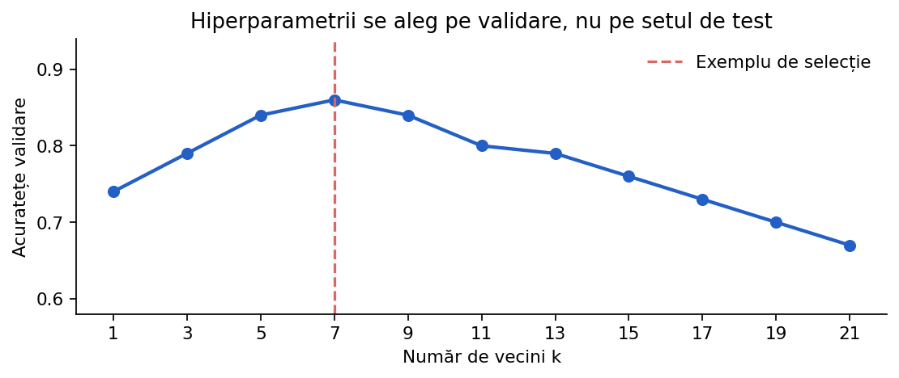

Optimizarea hiperparametrilor
Cum alegem numărul de vecini, adâncimea unui arbore sau intensitatea regularizării, fără să învățăm particularitățile setului de test? Vom construi o metodă corectă de experimentare.
Parametri versus hiperparametri
w și termenul liber b din regresia liniară. Un hiperparametru este ales de experimentator sau de o procedură de căutare: de exemplu, n_neighbors=5 pentru K-NN, max_depth=4 pentru arbore sau C=1.0 pentru SVM.Hiperparametrii nu sunt „constante universale”. O setare bună pentru un set de date poate fi slabă pentru altul. Scopul este să alegem configurația care generalizează bine pe date de validare.

Exemplu concret: alegerea lui k la K-NN
k=1 modelul se bazează pe vecinul cel mai apropiat și poate fi foarte sensibil la zgomot. Cu un k mult prea mare, informația locală se pierde și modelul poate prezice clasa majoritară. Pentru a alege k, antrenăm pe aceeași porțiune train și comparăm acuratețea pentru mai multe valori pe validation.La egalitate, preferăm de regulă modelul mai simplu sau aplicăm o regulă stabilită înaintea evaluării; nu decidem după scorul testului final.
from sklearn.datasets import load_iris from sklearn.model_selection import train_test_split from sklearn.neighbors import KNeighborsClassifier from sklearn.metrics import accuracy_score X, y = load_iris(return_X_y=True) X_train, X_val, y_train, y_val = train_test_split( X, y, test_size=0.3, stratify=y, random_state=42 ) for k in [1, 3, 5, 9, 15]: model = KNeighborsClassifier(n_neighbors=k) model.fit(X_train, y_train) print(k, accuracy_score(y_val, model.predict(X_val)))
De ce un singur split poate înșela?
StratifiedKFold, care păstrează aproximativ proporțiile claselor în fiecare fold.Nu este permisă efectuarea preprocesării globale pe toate datele înainte de împărțirea pe folduri dacă transformarea învață din date.
from sklearn.model_selection import StratifiedKFold, cross_val_score from sklearn.datasets import load_iris from sklearn.neighbors import KNeighborsClassifier X, y = load_iris(return_X_y=True) cv = StratifiedKFold(n_splits=5, shuffle=True, random_state=42) for k in [1, 3, 5, 7, 11]: scoruri = cross_val_score(KNeighborsClassifier(n_neighbors=k), X, y, cv=cv) print(k, f"medie={scoruri.mean():.3f}", f"std={scoruri.std():.3f}")
Grid Search: căutarea sistematică
max_depth din 2, 4, 6 și min_samples_leaf din 1, 3. Obținem 3×2 = 6 configurații.Dacă avem mulți hiperparametri, numărul total de combinații crește rapid și timpul de antrenare poate deveni mare. Pentru o configurație cu 6 opțiuni ale lui A, 5 ale lui B și 4 ale lui C avem deja 6×5×4 = 120 antrenări per fold.
from sklearn.tree import DecisionTreeClassifier from sklearn.model_selection import GridSearchCV from sklearn.datasets import load_iris X, y = load_iris(return_X_y=True) grid = GridSearchCV( DecisionTreeClassifier(random_state=42), {'max_depth': [2, 4, 6], 'min_samples_leaf': [1, 3]}, scoring='f1_macro', cv=5 ) grid.fit(X, y) print(grid.best_params_) print(round(grid.best_score_, 3))
Randomized Search: căutarea prin eșantionare
Stabilește dinainte numărul de încercări și random_state pentru reproductibilitate. O căutare foarte mare, pe același set de validare, poate la rândul ei produce overfitting la validation.
from sklearn.model_selection import RandomizedSearchCV from sklearn.tree import DecisionTreeClassifier from sklearn.datasets import load_iris X, y = load_iris(return_X_y=True) search = RandomizedSearchCV( DecisionTreeClassifier(random_state=42), {'max_depth': list(range(2, 15)), 'min_samples_leaf': list(range(1, 12))}, n_iter=12, cv=5, random_state=42 ) search.fit(X, y) print(search.best_params_)
Pipeline: selectarea modelului fără leakage
Pipeline(StandardScaler(), SVC()); pentru fiecare fold, scalerul este potrivit doar pe porțiunea de antrenare din acel fold.În dicționarul de hiperparametri, numele unui parametru al unui pas din pipeline este numele_pasului__parametrul, cu două caractere underscore.
from sklearn.pipeline import Pipeline from sklearn.preprocessing import StandardScaler from sklearn.svm import SVC from sklearn.model_selection import GridSearchCV from sklearn.datasets import load_iris X, y = load_iris(return_X_y=True) model = Pipeline([('scaler', StandardScaler()), ('svm', SVC())]) search = GridSearchCV( model, {'svm__C': [0.1, 1, 10], 'svm__gamma': ['scale', 0.1]}, cv=5, scoring='accuracy' ) search.fit(X, y) print(search.best_params_)
Selecția metricii de optimizat
f1_macro, average_precision sau balanced_accuracy pot fi mai informative, în funcție de obiectiv.Scorurile numerice negative, precum neg_mean_squared_error, apar din convenția scikit-learn conform căreia scorul maxim este mai bun.
from sklearn.metrics import get_scorer_names nume = get_scorer_names() print('f1_macro' in nume) print('neg_mean_absolute_error' in nume)
Cum citim rezultatele unei căutări
cv_results_ putem extrage pentru fiecare configurație media scorurilor, variația și timpul de antrenare. Nu ne uităm doar la un singur număr: uneori o configurație mai simplă are medie aproape identică, dar timp mai mic și comportament mai stabil. best_params_ este configurația câștigătoare conform scorului ales și împărțirilor CV, nu un optim garantat pentru orice date viitoare.from sklearn.model_selection import GridSearchCV from sklearn.tree import DecisionTreeClassifier from sklearn.datasets import load_iris X, y = load_iris(return_X_y=True) search = GridSearchCV(DecisionTreeClassifier(random_state=42), {'max_depth': [2, 3, 4]}, cv=3).fit(X, y) rezultate = search.cv_results_ for params, media in zip(rezultate['params'][:4], rezultate['mean_test_score'][:4]): print(params, round(float(media), 3))
Public leaderboard vs. private leaderboard
Strategie recomandată: CV intern, experimente înregistrate, încercări țintite și analiza stabilității. Public leaderboard este un semnal suplimentar, nu singura sursă a deciziei.
Nested CV: evaluarea procesului de alegere
from sklearn.model_selection import GridSearchCV, cross_val_score from sklearn.datasets import load_iris from sklearn.neighbors import KNeighborsClassifier X, y = load_iris(return_X_y=True) cautare = GridSearchCV(KNeighborsClassifier(), {'n_neighbors': [3, 5, 7]}, cv=3) externe = cross_val_score(cautare, X, y, cv=5) print(externe.round(3), round(externe.mean(), 3))
De reținut pentru ONIA
Compară metodele în condiții corecte: același protocol de evaluare, date de validare separate și o metrică relevantă pentru problema rezolvată. Testul final nu trebuie folosit la alegerea hiperparametrilor.
Exemplele din această lecție sunt didactice; la competiție verifică întotdeauna enunțul, formatul datelor și metrica oficială.
Pentru detalii de implementare: Model evaluation — scikit-learn și Common pitfalls.